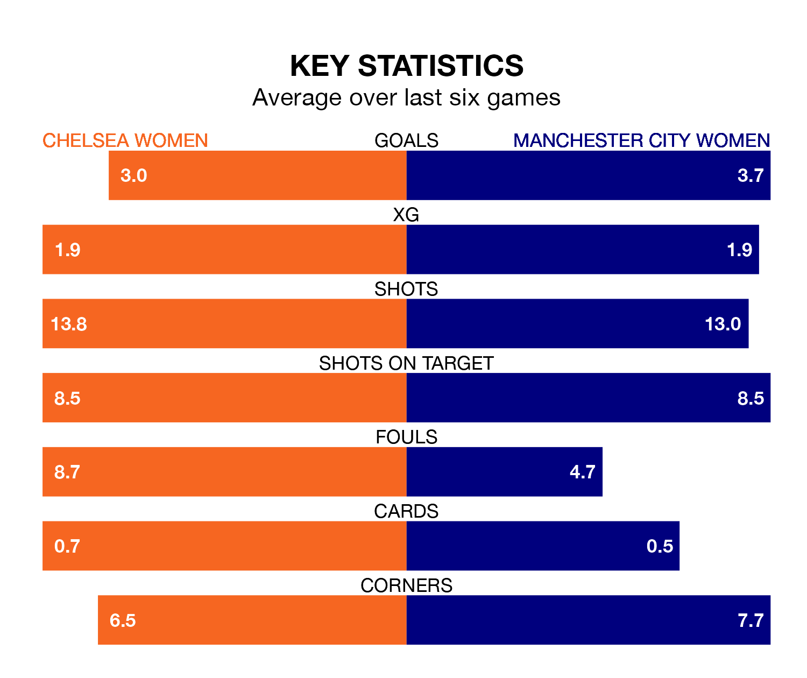

The FA Women's Super League's top two sides face each other at Kingsmeadow in Friday's late kick-off, when Chelsea Women host second-placed Manchester City Women.
Chelsea have picked up 11 wins and one draw from 13 games so far this season, and sit three points above the visitors going into the 7.15pm match.
City, meanwhile, have won 10 and drawn one, picking up 31 points.
With 41 goals in 13 games so far this season, Chelsea are the league's highest scorers with 3.2 goals per game. And they are conceding fewer than average, letting in 12 goals at a rate of 0.9 per game.
Manchester City are also above average scorers, with 2.7 goals per game, compared to a league average of 1.6. They have conceded 0.6 goals per game.
The Blues are in fantastic form in the FA Women's Super League, with five wins and one loss from their last six games.
But with six wins and no losses over that period, City's form is even better – they have taken 18 points from 18, compared to the hosts' 15.
In Khadija Monifa Shaw, the away side have the league's most on-form striker so far this season. She has notched 13 goals in 12 appearances.
Her goal rate of one every 69 minutes is slightly quicker than that of Lauren James, Chelsea's top scorer with a goal every 73 minutes, and a total of 12 goals in 12 games.
In the last 10 years, Chelsea and Manchester City have played each other on 33 occasions. Chelsea won 13 of them, Manchester City 11, and they drew nine times.
On average, the Blues scored 1.4 goals and City 1.2 in those matches.
Their last meeting was on October 8, when they played out a 1-1 draw.
Chelsea's last match was on February 4, a 3-0 win against Everton Women, with Guro Reiten (two) and Erin Cuthbert getting the goals for the Blues.
Manchester City beat Leicester City WFC 2-0 last time out, also on February 4, with Chloe Kelly and Lauren Hemp on the scoresheet.
Updated: 12:06 (UTC), 15/02/24